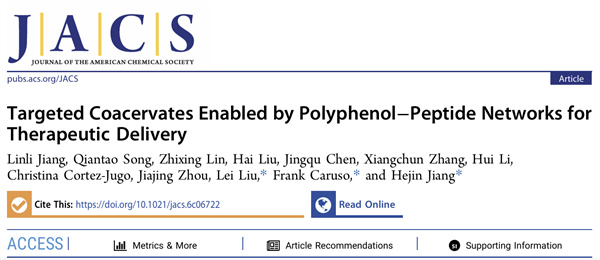

学院通知 · 教学通知
我院刘磊教授团队联合四川大学轻工科学与工程学院、澳大利亚墨尔本大学在靶向凝聚体治疗递送体系研究方面取得重要进展
发布时间：2026/05/29
近日，我院刘磊教授团队联合四川大学轻工科学与工程学院蒋和金特聘副研究员/周加境研究员团队及澳大利亚墨尔本大学Frank Caruso教授团队，在靶向凝聚体用于治疗性生物分子递送方面取得重要进展，研究成果以 “Targeted Coacervates Enabled by Polyphenol?Peptide Networks for Therapeutic Delivery” 为题发表在 Journal of the American Chemical Society 杂志。刘磊教授、Frank Caruso教授和蒋和金特聘副研究员为本文通讯作者，蒋林利助理研究员为第一作者。 治疗性生物分子在调控细胞功能、肿瘤治疗和基因治疗等领域具有重要应用价值，但其胞内递送面临稳定性差、靶向性不足和释放不可控等难题。凝聚体是一类由液-液相分离形成的水相液滴，作为新型药物递送系统具有制备条件温和、负载效率高和能够保护生物活性等优势，但传统凝聚体缺乏稳定的界面结构和可调控的表面化学性质，限制了其在精准治疗递送中的应用。 针对上述问题，本研究构建了多肽-多酚网络修饰的凝聚体递送平台。该体系由精氨酸肽与二硫键连接的天冬氨酸肽通过相分离形成凝聚体，并通过单宁酸与功能肽构筑表面涂层，从而提高胶体稳定性、促进内体逃逸，并实现细胞靶向的可编程调控；其中，胞内高谷胱甘肽环境可触发二硫键断裂，促进凝聚体解体和货物释放。研究表明，该平台可递送蛋白、多肽、质粒 DNA、siRNA 等多种治疗性生物分子，并在肿瘤模型中展现出良好的靶向治疗及免疫治疗潜力。 该研究提出了一种基于多肽-多酚网络的凝聚体表面工程策略，实现了凝聚体稳定性、靶向性和胞内响应释放行为的多重调控。该工作不仅延续并拓展了团队在凝聚体人工原始细胞模型和药物递送系统方面的研究基础，也为功能化凝聚体在基因编辑、免疫治疗和精准递送等领域的应用提供了新的技术平台。 原文链接： https://doi.org/10.1021/jacs.6c06722
